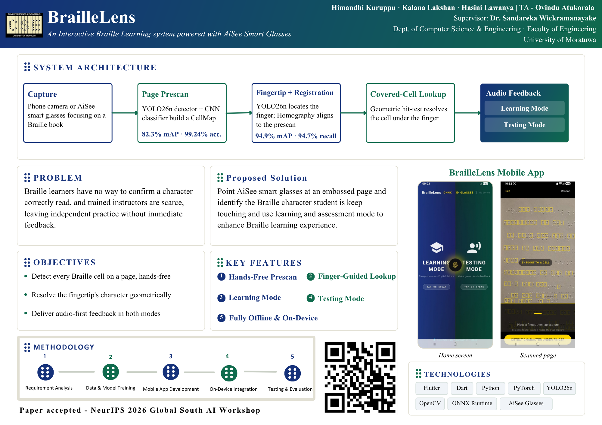
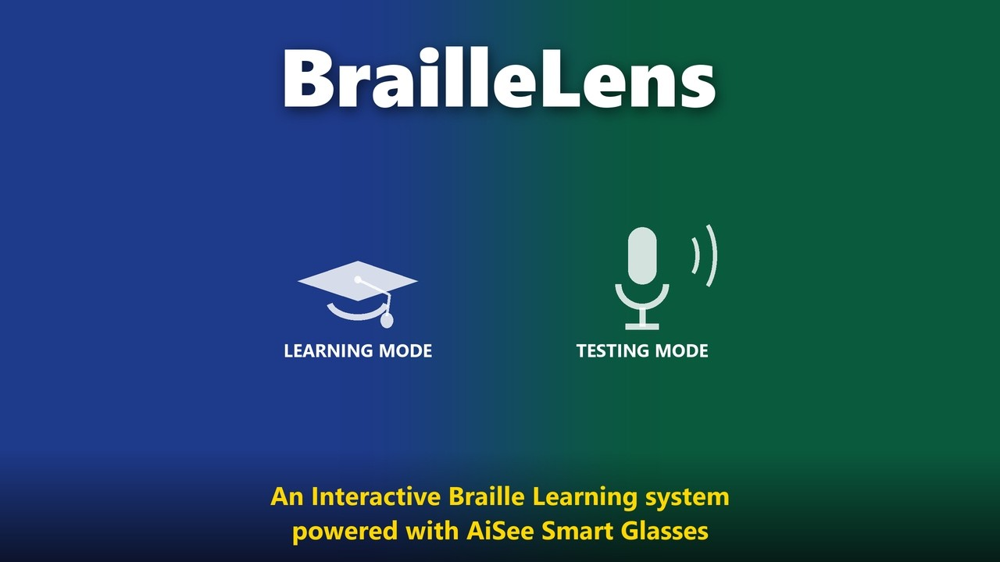

BrailleLens
An interactive Braille learning system powered by AiSee smart glasses. Touch a cell on an embossed page and hear the character under your finger, fully offline.
Practice without a tutor
Learning Braille usually needs an experienced, sighted tutor, and such tutors are scarce in many regions, including Sri Lanka.
No way to confirm a character
Braille learners have no way to confirm whether they read a character correctly. With trained instructors scarce, independent practice happens without immediate feedback.
A camera that knows where you're touching
Point a phone or AiSee smart glasses at an embossed page. BrailleLens identifies the Braille character the student is touching, and offers learning and testing modes to support practice.
Three goals
The page is mapped once and the finger is located against that map, so the learner can explore the page freely and ask about any cell.
Detect every Braille cell on a page, hands-free
Work out the character under the fingertip geometrically
Give audio-first feedback in both modes
From page to voice
Five on-device stages turn a camera frame into a spoken character. The page is prescanned into a CellMap, then each fingertip frame is registered back to that map.
Capture
A phone camera or AiSee smart glasses focus on a Braille book.
Page prescan
A YOLO26n detector and a CNN classifier build a CellMap of the page.
Fingertip + registration
YOLO26n locates the finger, and a homography aligns the frame to the prescan.
Covered-cell lookup
A geometric hit test finds the cell under the finger.
Audio feedback
The result is spoken back in learning mode or testing mode.
Model performance
Accuracy of the two on-device detectors and the cell classifier that power the pipeline.
mAP · YOLO26n Braille cell detection
Recall · YOLO26n fingertip detection
mAP · YOLO26n fingertip detection
Accuracy · CNN dot-pattern classifier
Two modes
Both modes share the same page map and fingertip lookup, so the learner moves between reading and self-testing on the same page.
Learning mode
Place a finger on any cell and the app reads the character under it aloud.
- Two-photo scan: prescan the page, then capture the finger
- Speaks the character under the fingertip
- Explore the page freely, cell by cell
Testing mode
The app asks the learner to say the character, then checks the answer by speech.
- On-device speech recognition transcribes the answer
- Names the correct character when the answer is wrong
- Feedback through speech, sound, vibration and colour
Hands-free prescan
Maps every cell on the page in one capture.
Finger-guided lookup
Finds the exact cell under the fingertip.
Learning mode
Hear any character on demand.
Testing mode
Say the answer and get instant feedback.
Fully offline
All models run on-device, so pages and voices stay private.
See it in action
The project poster summarises the whole system on one page. The video walks through the app on a real Braille page.


The project moved through five stages, from requirements to on-device evaluation.
Requirement analysis
Data & model training
Mobile app development
On-device integration
Testing & evaluation
Built with
Models are trained in Python with PyTorch, exported to ONNX and run inside a Flutter app on the phone or with AiSee glasses.
The people
A final-year project at the Department of Computer Science & Engineering, University of Moratuwa.
Himandhi Kuruppu
Kalana Lakshan
Hasini Lawanya
Dr. Sandareka Wickramanayake
Ovindu Atukorala
Computer Science & Engineering
Find out more
Source code, the demo video and the publication.